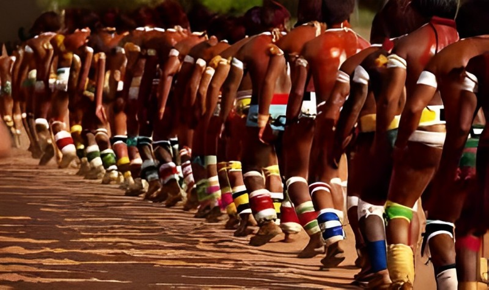

Kuarup
O Kuarup, também conhecido como Quarup, é um importante ritual cerimonial realizado por diversas etnias indígenas brasileiras, especialmente aquelas que habitam a região do Alto Xingu, como os povos Kamayurá, Kalapalo, Kuikuro, Waurá, entre outros. Este ritual é considerado uma das celebrações mais significativas e complexas dessas comunidades.
O Kuarup é realizado em homenagem a pessoas importantes que faleceram, geralmente líderes tribais, guerreiros valentes ou personalidades de destaque nas comunidades. A celebração tem como objetivo honrar os mortos, celebrar suas vidas e facilitar a passagem de suas almas para o mundo espiritual.